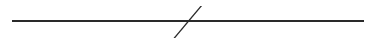

同声传译 | 跨儿女权主义的未来

Feminist Perspectives on Trans Issues
女 权 主 义 视 角 下 的 跨 性 别 议 题
First published Sat Sep 26, 2009; substantiverevision Wed Jan 8, 2014

Abstract
女权主义和跨性别理论与政治之间存在着一些令人惊讶的张力，而本文试图对这两个议题交叉时产生的一些关键性哲学问题进行讨论。只有当我们回顾美国女权主义理论和跨性别政治发展的历史进程，才能对这个问题给出有力的回答。在20世纪90年代早期，“跨性别”与“跨性别研究”开始出现，前者是政治议题，而后者与高校“酷儿研究”相生相伴 (Stryker 2004)，它们从诞生之初就同女权主义、酷儿理论与政治交织在一起。（下文将解释这些术语。）因此，本文大体上也会根据时间顺序来进行梳理。
一组主要的哲学议题是关于自我的不同定义和其与性别化身体 (sexed body)、社会性别的关系。（通常来说，生理性别与社会性别不同，社会性别指的是以生理性别为基础的文化角色）。自我意识是否先于性别身份而存在？生理性别是否是区分社会性别的“硬件基础”，还是说生理性别本身也是文化建构的？如果自我意识总是浸润在文化建构的社会性别中，那么对社会性别压迫的抵抗又如何成为可能？此外，对这些问题的思考是如何启迪女权主义政治与理论的？这些思考又应该如何启发跨性别政治与理论？
与此相关的另一组议题则是关于理论建构中的政治与哲学困难，在建构性别压迫理论，以及采取有效抵抗策略来应对多形态的压迫时，往往会出现这些困难。如果跨性别人群是因为其跨性别人群身份而被压迫，而女性是因为其女性身份而被压迫，那么我们似乎就需要提出至少两种不同的性别压迫模式。这两种不同的模式所引发的政治行动是否必然会出现矛盾呢？如果确实有矛盾，我们又该如何照顾到一群同时作为女性和跨性别被压迫的人呢？有可能建立起非跨儿女权主义者和跨性别运动家之间的联盟吗？二者的共性在哪里？二者之间的张力又出于何处？
Chapter 1 / 第一章
/ 点击上方蓝字查看第一章 /
Chapter 2 / 第二章
/ 点击上方蓝字查看第二章 /Chapter 3 / 第三章
跨儿女权主义的未来
8 / 酷儿理论之后的女权主义大团结
8.1 世俗犹太人和跨性别女性
8.2 作为关系的性别
8.3 种族/性别类比
8.4 激励性身份
9 / 跨儿具身性的现象学
10 / 成为跨儿女权主义
10.1 跨儿女权主义宣言
10.2 跨儿女性宣言
10.3 恶魔欺骗者和伪装者
11 / 结语
8
酷儿理论之后的女权主义大团结
Feminist Solidarity After Queer Theory
在Butler之后，非跨儿女权主义者对跨儿问题的研究有着显著的贡献，其主要关注点在于女权主义团结和跨儿身份的问题上。与Raymond和Hausman的成果形成鲜明对比的是，这些贡献展现了对促进跨儿和非跨儿女权主义者结盟的真诚努力。
8.1
世俗犹太人和跨性别女性
Secular Jews and Transsexual Women
Naomi Scheman（1997）研究了特定的主流规范性使如何必然导致了“被贱斥的他者”，这些“被贱斥的他者”必须存在，但却被主流的特权阶级个体标识为不可能和无法理解。Scheman对在规范化的生活中心寻求立足之地（最初个体被中心排除在外）和完全拒绝主流形式的身份（通过接受一个人的“边缘”状态来达成）这两种选项都表示否定。Scheman旨在通过使那些被边缘化的人成为中心来质疑那些规范化的中心（126-7）。以这点为目标，她首先假设边缘化的生活“的确有人如此生活过，因此是宜居的”（132）。
（译按[1]: abjection, 贱斥，最初由法国哲学家朱莉亚·克里斯蒂娃提出，指代个体在留存个体身份认同时，必须区别对待的他者与他者性，简介见https://en.wikipedia.org/wiki/Abjection#In_sociological_studies）
作为一个世俗的犹太人，Scheman利用她自己对犹太身份明确性的缺乏，以对她自己社会性别的无问题状态提出问题。她认为基督教规范在观念上要求犹太人的存在，但却因为它用一种以皈依为基础的方式表征其他所有宗教，因此这种规范将犹太人标识为无法理解（1997, 128）。在这种情况下，很难解释到底通过什么来识别一个世俗犹太人。同样，她认为跨生理性别涉及到了对不连贯性的要求。由于异性恋规范要求女性和男性的“天然”二元性，跨生理性别者只能极为矛盾地被定义为彻底的另一性，并被要求否认自身过去的历史（如Stone认为的那样）（138-9）。在这方面，Scheman指出，基督教规范和异性恋规范是有鲜明不同的：前者将所有宗教都表征为受选择和皈依驱动的，后者将所有性别都表征为出生时由自然决定的（142）。
Scheman的“犹太性”和“女性”都可以理解为家庭相似概念（1997, 144）。然而那些基于祖先而被分到犹太人范畴的人，和基于出生时的性别被分配到某个性别的人，共同构成了这些概念的基础，没有这些人，这些概念就会完全不存在（144）。她介绍了“临产期粉红”的表述，并以此来描述那些自出生起就作为女性被压迫的人。她建议将此作为理解对“womyn-born-womyn”（女性-生来女性）[1]空间的需求的一种方式。她认为这种空间可以治疗在厌女社会中因出生时被指定为女性而造成的伤害。（译按[1]: 见4.3）
然而，正如个人可能皈依犹太教并成为犹太人一样，Scheman认为，MTF（男跨女）可能被理解成“皈依”为女性。在这两种情况下，这些人都并不比出生时就属于此类的人更不真实（144）。虽然她注意到一些不和谐（例如，在跨性别的例子中，人们不是像改变宗教那样简单地做选择），她同样认为，在这方面通过将生理/社会性别视为与犹太身份类似，能够消除它们包含的一些压迫（145）。Scheman认为，加入集体的概念很重要，因为它强调了分享连结、价值观和承诺的重要性。最后，最重要的是，她指出，“那么，问题不在于谁真的是或不是什么，而在于当有人来伤害我们中的任何一个人时，谁能让我们依靠，其坚实的基础不是身份，而是忠诚和团结”（153）。
8.2
作 为 关 系 的 性 别
Gender as Relational
Cressida Heyes继续着这个非跨儿女权主义项目，该项目试图寻找（非跨儿）女权主义者和跨儿伙伴之间联合的基础。在Hale之后，她提出女性是一个家庭相似概念，并因不同的政治目的受着不同的限制（2000, 84-5）。在Scheman之后，她指出，在某些情况下，为了政治目的，可能需要强调跨儿和非跨儿女性之间的差异（例如“临产期粉红”）（93）。她对Raymond和Hausman的非跨儿女权主义立场提出了批评，并批判了她眼中的跨性别政治颇具棘手的倾向（比如Leslie Feinberg的著作），一种以原子论视角看待自我我的自由主义观念[1]（2003）。通过这种方式，她试图找到一些中间的、共同的基础。
（译按[1]: social atomism, 社会原子论，该理论视社会中的个体与科学中的原子具有可比性，个体是社会这个有机体中的“原子”，简介见https://en.wikipedia.org/wiki/Atomism_(social)）
Heyes提出，Raymond和Hausman都陷入了同一个图景中，该图景排除了任何对自身性别特权的考察，并排斥了察觉跨儿反抗的可能性（2003, 1095）。通过将所有跨生理性别主体同化为一种关于跨性别的异性恋-父权主义的医学话语，上述排斥得以实现（2003, 1095）。以Feinberg的《跨儿解放》（Trans Liberation）一书为例，Heyes同样提出了对跨社会性别政治的担忧，这种政治认为个人社会性别表达不应受到批评、限制或压迫。她观察到社会性别不仅仅是一种审美风格或孤立自我的表达。它是关系型的，且通常嵌入在有问题的、压迫性的系统中。举例来说，某些形式的男性气质就包含与女性以特定的方式互动，而某些形式的男性气质会包括厌女。这就意味着，成为“真正的男人”可能会包含以敌对和破坏性的方式与女性产生联系。这种性别行为应该受到批评。Heyes认为，仅仅鼓吹性别表达自由的观点，缺少的是丰富的“转变伦理”，“转变伦理”区分了被压迫和被边缘化个体的激进转变和只会进一步压迫和边缘化他人的、占有霸权（即主导、压迫）地位的社会性别形式（2003, 1111-3）。
8.3
种 族 / 性 别 类 比
Race/Sex Analogies
Heyes还研究了在跨性别问题和假设的“跨种族主义”中应用的性别/种族类比。回想一下Raymond的修辞问题—“一个想成为白人的黑人是否患有‘跨种族’的‘疾病’”。这个问题旨在表明，由于“跨种族主义”在政治上和道德上都是被质疑的，所以跨性别也是应该被质疑的。Christine Overall反对Raymond的观点，认为那些接受跨性别道德的人也应该接受“跨种族主义”道德（2004）。
Heyes观察到Raymond所声称的“没有人要求医学干预跨种族，因为多数黑人都意识到，需要被改变的是他们的社会，而不是皮肤”[1994, xvi]实际上在经验上是错误的（2003, 1102）。确实存在着意图修改种族或种族标记特征（例如，直发处理，隆鼻手术，眼睑手术）的整容手术。Heyes指出Raymond使用性别/种族类比将跨性别者视为“反复无常的或侵占的”。她认为，这种类比是其评估改变身份背后的个人动机和政治的基础，其问题在于她错误地设想了这些动机的基本点是一个“权衡利弊的透明的政治评估”（ibid.）。
Heyes声称，虽然Overall提供了一个更加微妙的分析，但她看待种族和性别的方式仍然是脱离了具体历史语境，并且她假定这种历史与伦理评估没有关联（2006, 269-70）。特别是，Heyes认为，在种族和性别之间进行类比时，存在着对种族与性别互相对比的历史缺乏足够重视的危险。例如，由于性别在二元论中被视为核心的本体论事实，性别重置的可能性和医学的跨性别话语这类情况都得以存在，这些情况会重新定义这种基本的本体二元论（2003, 1102; 2006, 2006, 277）。相比之下，虽然种族也被视作在一个先天范畴，但还有另一类种族话语将种族理解为一种肤浅的外在特征，在这种特征下，人类是完全相同的。这一点，外加上相同严格的二元论的缺乏，使得相同的条件无法被提供给“跨种族主义”使之成为可能（2003, 1103）。
Heyes指出了遗传在决定种族（但不是性别）方面所起的历史作用。她认为，这种性别中不存在的特质削弱了“跨种族主义”的可能性（2006, 271）。与此相关的是，种族重置有着与“冒充”(passing)[1]相关的历史，这会使得“跨种族主义者”极易受到“冒充”的控诉，而这在跨性别之中并不存在（272）。Heyes指出，那些改变种族特征的整形手术的提倡者们强调个人的自我表达和审美，因此避免了种族背叛的问题（273-4）。Heyes指出，由于生理性别不被认为是遗传的，因此性别重置相比之下就更加可行。事实上，当今社会的生理性别必须被理解为部分由性别重置技术发展的历史构建（正如“冒充”部分构建了种族），在病理学和内部社会性别认同中，这种性别重置已经被完全地认同了（277）。
（译按[1]: passing, 暂译“冒充”，最初在美国指“黑人冒充白人”，在社会学中指个体将自己呈现为另一社会群体的行为，简介见https://en.wikipedia.org/wiki/Passing中多个词条。）
8.4
激 励 性 身 份
Aspirational Identities
在考虑到生理/社会性别转变的形而上学（即从男人到女人或女人到男人的转变）时，Christine Overall（2009）批评了两种关于它的描述。两种描述都同意，在某种程度上，生理/社会性别根本不会转变。个体会始终保持其过去的生理/社会性别。她把这两个描述都称为“变装假设”（12）。第一个观点通常被（某些）非跨儿人士采用。该观点认为，从一个生理/社会性别转换为另一个的跨儿人群只是戴上面具或是进行伪装，从而有效地隐藏跨性别者一直以来的真实情况（“真实的人格”）。在该观点看来，跨儿群体同时表现为具有欺骗性的和被欺骗的。第二个观点通常被（某些）跨儿人士采用。该观点认为，改变性别的跨儿群体不过是成为了他们过去本来的面貌，这是通过拿掉某种无法表达跨儿们“内在”真实 (“真实的人格”)的身体面具。在这两种描述中，生理/社会性别是不变的。人们不是改变生理/社会性别，而是在假面舞会状态中来回切换。Overall认为，欺骗性和被欺骗性都难以置信地出现于所有跨儿的各式各样的生活，并且实际上被许多跨儿的生活所掩盖（13-14）。她反对第二个关于化妆舞会的说法，理由是它依赖于令人怀疑的形而上学（14-18）。
在Overall看来，相比之下，我们应该将生理/社会性别的转变理解为类似于“其他改变和改善生活的个人转变和自我实现的愿望”（19）。她提供的一些例子包括成为移民、加入十二步计划来戒酒、信仰宗教、成为母亲等。“一些目标和愿望，”Overall写道，“被某些特定的群体深刻地感受到，且对这类群体有极其重要的中心价值。正是这些目标和愿望为这些个体提供了最主要的动力。”（19）相比于以上两个变装观点，Overall提议我们将生理/社会性别转变视为生理/社会性别的实际变化。保持不变的不是什么具体化的性别自我。相反，这个人“在转变性别之后，只以自己的方式存在，这种方式是先前的自我渴望且积极追求的，因此性别转变之后个体的存在方式是由先前的自我产生和形成的，并可以用先前的自我特征来理解”（20）。
这种观点的一个不幸后果是，（比如说）一个男跨儿在转变之前不能真正地宣称自己是一个男人。可以肯定的是，在转变之前和之后，身为男人的感觉都是他身份认同的核心，因为成为一个男人是他随后实现的足以改变生活的愿望。因此，Overall的观点与第一个变装观点的重要区别在于，她认真对待跨儿的身份认同，并视其为一种对真实的追求。但是（例子中的）他在转变之前声称自己是男人（或男性）仍然是错误的。为了更好地了解这一点，我们只要考虑到Overall（2009）有效地通过生殖器定义了生理性别（11），并认为一个未经过阴茎成形术的男跨儿尚未改变他的生理性别（因此仍然是女性，并且可能还是女人）。问题在于，由于成本的原因，许多男跨儿选择不进行这种类型的手术。尽管如此，他们仍然可能将自己视为男人（甚至是男性）。尽管Overall试图绕过这种情况，但这仍然为自我欺骗和被欺骗的再次出现提供了可能。
Overall（2012）视社会/生理性别转变为一种渴望，以期削弱跨儿和顺性别人士彼此不同的观点。她这样做的目的不是要忽视跨儿人士作为跨儿而遭受到的针对性的暴力与歧视，而是要质疑认为顺性别是正常的而跨性别是不正常的这一观点。
她区分了习得身份和渴望身份 (aspirational identities)。前者这种身份是被指派的或是直接获得，并且不需要进一步的努力来维护它们（255）。例如，成为一个生物学上的母亲是习得的身份。相反，渴望身份需要不断的努力来维持（256）。例如，成为一个（能照顾一个或多个孩子的）母亲，这需要不断的努力来维护。Overall认为，社会性别身份（她指的是男孩/男人和女孩/女人的社会范畴）本质上是渴望身份。“人们可以通过上述的身体塑性、自我表达和社会性别活动来表现一种社会性别，而这些必须通过持续的性别身份维护来达成”（256-57）。她还指出，（至少对某些人来说），生理性别本身可能也正在成为一种渴望身份，因为顺性别者和跨儿都同样会寻求手术或其他医疗途径（如激素治疗），来改变或增强其身体的性特征（258）。
Overall之后指出，跨儿和顺性别者（被视为渴望性别时）有如下共同点。这两种都任由强制的性别规范淹没，都受到维持社会性别身份的限制，也都有着表达身份的各种机会，这两者都受到与性别维护相关的各种危险（例如，跨儿可能会因被认为“错误表征”了其生殖器状况而遭受恐跨儿的暴力，而顺性别女性可能会因为她们的性别表征而遭受暴力），最后（与普遍的假设相反）二者在对性别的渴望中都经历了不同形式的连续性和不连续性。例如，一位跨儿可能在其人生的大部分时间里都渴望成为一个女孩/女性，而女权主义使得顺性别女性可能会改变她们女人特有的渴望。通过这种方式，Overall继续着这个寻找非跨儿女权主义者和跨儿结盟的非跨儿女权主义者项目。

9
跨儿具身性的现象学
The Phenomenology of Trans Embodiment
Gayle Salamon的著作涉及到社会性别具身性[1]的现象学，尤其是跨儿对“感受到的身体”和外在表现出来的身体之间不和谐的体验。她重新审视了Judith Butler（Butler认为社会性别自我是由社会建构的）和跨儿理论家之间的争议。例如，Jay Prosser（1998）指出，与其将跨性别作为社会性别建构性的证据，不如说跨性别是对于社会性别建构的超越（1998, 7及65）。除了提出Prosser误读了Freud和Didier Anzieu（2010, 39-40），Salamon还捍卫了将身体本体感知意识视为某种文化超越性的不可思议性。她认为，该观点设想的身体最后会无法被认为是人类（88）。在她看来，“使身体在文化中可辨认或不可辨认的力量，同样塑造了似乎最为个人、最为私密以及最不受管制的对具身性身体的感受”（77）。
（译按[1]: embodiment, 具身性/缘身性，现代心理学与认知学使用具身性来突破灵肉二元对立，认为个体的心灵与肉体彼此缠绕，无法简单地划而为二）
在Schilder（1950）著作的基础上，Salamon认为一个人的身体形象不是天生的，而是随着时间的推移，通过与世界的经验接触（包括与其他人的互动）而建立起来的。鉴于此，Salamon认为，一些跨儿所感受到的身体感觉与外观之间契合度的缺乏，实际上是普遍的——对跨儿和非跨儿群体都一样。“规范性的社会性别本身的产生，”她写道，“就是依赖于对身体的‘感觉’与外在轮廓之间的脱节……这种脱节不必被视为一种病态结构”（2010, 2）。
然而，尚不清楚这样的环境论如何解释跨儿体验到的“错误”具身性是如何发生的。考虑到并非所有的女跨儿从很小的时候就拥有自觉的女人（或女孩）自我认同，也并非所有的男跨儿从很小的时候就拥有自觉的男人（或男孩）自我认同。想象一下，可能有一名跨性别女性从小被教育成为一名男性，并遵循“适当的”性别规范。在环境论中，这个个体就应该形成一个可以大致被描述为“男性”的对身体的印象。因为根据外部性别规范和内化的性别身份认同，这个人本应有着某种交互式的、产生上述身体印象的世俗体验。因此，如果这个身体形象与被指定的社会性别不一致，那它之前一定不会以环境论的方式发展。
然而，除了拥有对自己身体的内在感知之外，人还可以对自己的身体投入情感。也就是说，人们对自己的身体感兴趣，并抱有强烈的情感。Salamon写道，“如果没有这种情感，我们与我们身体的关系就是毫无人情的疏离。我对我自己身体‘属于我’的感觉，甚至是我对它的一致性，都取决于这种自恋的投入”（2010, 42）。这提供了一种超越（社会规定的）环境经验限制的方法，因为这种情感态度不受该类型的世俗约束。
然而，挑战在于如何以不沦落为性欲或色情描写的方式来解释这种投入。Schilder的力比多投入[1]表述有着强烈的性暗示。令人担心的是，对这种观点的接受令人担心它会将跨儿对身体焦虑的体验贬斥为性感受。考虑到一种长期存在的趋势（正如Salamon指出的那样，2010, 45），即用性欲的方式建构跨性别、将跨越社会性别的身份认同 (cross-gender identification)贬斥为性迷恋、将跨儿的身体焦虑划为与其他事情毫不相干的现象，这一点尤为令人担忧。不幸的是，在对这个问题的讨论中，Salamon采用了Butler的形态学想象的概念，这个概念本身就给了性欲以特权。还有一个严重的缺陷亟待解释，即在跨儿的身体焦虑中，必须考虑到其对社会性别身体的非性欲的情感投入，正是跨儿的社会性别身体分裂了对社会性别身体的感觉和生理性别身体的外在表现。（译按[1]: Schilder原文为libidinal investment, 此处应是作者笔误写为libinal。）
然而，在Salamon自己对性欲的描述中，她特别小心地避免将跨性别简化为色情描写。她只是对以一种有效的方式来描述跨儿的性体验感兴趣（2010, 45）。Salamon借鉴了梅洛·庞蒂(Merleau-Ponty)关于性图式和性换位的概念。在体验性欲时，个体被引向一个欲望对象。在性换位中，（承载）性欲的身体被欲望本身取代（或身体本身成为了欲望）。Salamon说明了以下几点。当我口渴并伸手去拿一杯水时，“我的手臂伸了出来，它不再是我的感觉所在，而是成为了我向别人走去的一个姿势。手臂是欲望的通道，但不是它的感觉所在”（54）。
在Salamon的叙述中，重要的不是实际的身体部位本身，而是它在性欲中的作用，以及其转换的过程。“欲望与身体的连接处便是性欲的位置，而这个连接点可能是阴茎、力量与生殖力的象征或其他的身体部位，又或者可能是身体未被划分成部分的区域、与没有与身体有机相连的身体辅助物。”（2010, 51）这样一来，Salamon对梅洛·庞蒂的认可就类似于Butler的形态学想象的概念，类似之处在于其考量了情色在性欲中是如何调动部分的（或者说，实际上是从一个变为另一个的方式）。然而，值得注意的是，Salamon的观点允许她展示个体“内在对性别的感觉”是如何能够被外界看到的。比起仅仅讨论内在感受，我们讨论的是我们在世界上存在的方式、并时刻与他人交互着。

10
成为跨儿女权主义
Toward a Trans/Feminism
许多女跨儿因为是女性而十分熟悉性别歧视和性别暴力机制。此外，性别歧视和跨儿恐惧症有时被不可分割地混合在一起。例如，一些女跨儿有时可能会发现她们被刻板印象表征为妓女，仅仅因为她们被视为跨性别女人。考虑到这些因素，跨儿女权主义者的立场可能会将对女跨儿的压迫为出发点。数位作家概述了独特的“跨儿女权主义”立场。
10.1
跨 儿 女 权 主 义 宣 言
A Transfeminist Manifesto
Emi Koyama将“跨儿女权主义”定义为“大体是一场由女跨儿发起的，并且是为了自身的运动，女跨儿们视自身的解放为与所有女性及其他人的解放密切相关”（2003, 244）。Koyama认为，跨儿女权主义“同时为女跨儿和非跨儿女性发声，且要求非跨性别女性支持女跨儿来作为回报”，从而推动了女权主义同盟政治（ibid.）。Koyama认为，跨儿女权主义关注的一些问题包括身体形象、对女性的暴力以及健康和生育选择。
Koyama深入讨论了Heyes识别出的张力，该张力存在于性别表达自由和将社会性别理解为关系时可能涉及到的政治内涵。虽然Koyama呼吁女跨儿避免选择社会性别部分带有歧视色彩的形式，同时拒绝任何传统上对本质化性别认同的诉求，她也认识到女跨儿可能会发现自己必须服从传统性别形式以确保获得医疗技术，进而合法地成为“真正的女性”，也必须以冒充 (passing)非跨儿的方式生活才能避免恐跨儿暴力（2003）。她对一些纯粹主义式的要求提出了担忧，即要求一个女跨儿在一个充满性别刻板印象的社会中消除所有此类刻板印象。相比之下，Koyama坚持首推大范围的政治联盟，她坚持让个体女性自住决定如何定义达成社会性别，而不必让别人评判自己是否算得上是一个女权主义者（2003）。
Koyama还讨论了密歇根州Womyn音乐节采取“womyn-born-womyn”（女性-生来女性）政策来排斥对跨儿。Koyama批评了一些进行过手术的女跨儿接受“妥协”政策的行为，这种政策只承认进行过手术的女跨儿身份。Koyama认为，这样的政策将有利于那些拥有更多经济资源的跨性别女人，这是十分不公平的。因此，这项政策中既有了阶级主义，又包含了种族主义（2006, 700）。Koyama还认为，即使非跨性别女性确实需要自己的空间，也并不妨碍女跨儿参与音乐节，因为即使有色人种女性有特殊的排他性空间，但这并不意味着白人女性不能进入音乐节（701）。此外，Koyama指出，这种有色人种女性的特殊空间也并不排除可以冒充 (pass)为白人女性（并因此获得某些特权）的有色女性进入。事实上，Koyama认为，对女跨儿的排斥本质上是种族主义的因为它使用经验上的差异来排斥女跨儿，此类政策只能在假定女权主义团结需要一个同一的共享经验时才有意义（704）。
10.2
跨 儿 女 性 宣 言
Trans Woman Manifesto
Julia Serano阐述了跨儿女权主义政治的另一种形式，她区分了传统性别歧视（她指那些认为男性和男性气质优于女性和女性气质的观念）和对立性性别歧视 (oppositional sexism)（她指那些认为男性和女性，以及男性气质和女性气质，是几对排外的范畴的观念）（2007, 12-3）。Serano创造了跨儿厌女症（trans-misogyny）一词，以表现因人们针对跨儿与跨儿女性气质的各类歧视（13）。举例来说，一些女跨儿被媒体描绘成带有掠夺性的性欺骗者，或是悲哀、可笑的假货（36）。在Serano看来，这种描绘主要来源于那些带着性别歧视色彩去关注女跨儿的女性气质展现的行为，以及那些将女性气质视为人造的倾向（43-44）。Serano还挑衅地提出，对带有女性气质的男性的贬低，是传统性别歧视的一种独特形式。她称之为“女性气质躁狂症”(effemimania)[1]（129, 287）。
（译按[1]: effemimania，由单词effeminate变体后与mania拼缀而成。）
Serano指出一种“潜意识性别”（subconscious sex）的存在，以此表达传统意义上的性别认同概念，并于此同时不要求个体对“错误身体”的最初意识，她认为这种意识是基于生物学的，并且仅仅和身体有关，和社会角色并无关系（78-82）。（这样一来，她的观念与Prosser提出的“身体自我”相呼应。）Serano使用了“顺生理性别”（cissexualism）一词来表示那些生理性别和潜意识性别相一致的人的优势。然而，“顺社会性别”（cisgenderism）一词，则被用来表示那些认为男性应当具有男性气质以及女性应当具有女性气质的观点（在这类观点中，男性气质和女性气质由通常与男性和女性相关的几组特征构成）（90）。Serano认为，虽然某些形式的女性气质可能是社会建构的，但许多女性特征也是有生物基础的。她写道：
“人们必须有着相当坚定的看法，才能相信女性人口中的绝大部分能被轻易地‘洗脑’或‘强迫’，从而热情地采用一套完全人为的、非自然的社会性别表达。事实上，如此多的女性可以如此积极地倾向于女性气质是令人难以置信的，除非存在着一些能够在深层次不断与她们产生共鸣的事物。”（2007, 339）
然而，使人忧虑的是，Serano低估了女性顺从的广度和深度，她也尚未区分“个人共鸣”和强制的社会默许。在Serano看来，许多（非跨儿）女权主义者对女性气质进行负面评价（将其视为严格的具有强迫性的诡计），从而使得自身带上了某种形式的性别歧视。事实上，Serano声称任何对跨儿女性气质的女权主义批判本质上都是非女权主义的。
“换句话说，当我们批评任何性别为‘好’或‘坏’时，从定义上来看， 我们就是在进行性别歧视。毕竟，难道不是因为最初人们常常相当专横地将意义和价值观强加到我们的性别身体、性别表达和性行为上，我们才因此感到厌烦并驱使我们中的许多人加入女权主义和酷儿运动吗？”（2007, 360）
虽然Serano对女跨儿的行为被不公众地评判一事的担忧是正确的，但是这种不允许分析有政治问题的性别行为的立场似乎严重损害了女权主义的批评力量。核心问题在于Serano认为社会性别在本质上不具有关系性。这使得在她眼中，每个人都应该以任何方式自由表达社会性别（免于被评价为“好”或“坏”）。然而，一旦社会性别被视为具有关系性，女权主义者对某些形式的男性气质的女权主义担忧就是合理的，此类男性气质涉及对女性的不良对待，而一些特定的女性气质则涉及了对这些不良对待的接纳。一旦社会性别被认为是关系性的（即涉及以特定方式对待其他性别化的个体），就可以对其进行伦理评估（例如，“性别化的行为会伤害他人”）。为了女跨儿和其安全，这种跨儿女权主义的干预当然是恰当的。
公平地看待Serano，她并没有注意到男女之间的关系带有性别歧视色彩。实际上，她充分叙述了了对女跨儿的性化（2007, 253-262）。在她看来，这种助长了女性气质的消极关系特征并非来自女性气质本身，而是来自对女性气质的不恰当的解释和评价。不过，困难在于如何将女性气质从此类关系性的社会意义中抽离出来。即便这是可能的，女权主义者也在明确地关注着那些深藏在社会意义系统深处的、有害的男性气质、女性气质形式。将女权主义者呈现为对某些女性气质在文化中的抽象形式的负面评价，因此认为这些女权主义者在担忧性别歧视的同时，本身便带有性别歧视色彩，这似乎是不公平的。
10.3
恶 魔 欺 骗 者 和 伪 装 者
Evil Deceivers and Make-Believers
Talia Mae Bettcher（2012a; 2013; 2014）反对传统的对跨生理性别“错误身体”的观点（该观点认为性别认同是天生的，这决定了一个人的“真实”性别）与更新的、超越二元论的、随着20世纪90年代新的跨性别政治而出现的观点。她认为，这两个观点都会使跨儿身份失效。前者会使认为自己的生殖器没有错误的跨儿的自我认同失效，而后者，通过将跨儿呈现为在二元性别中错误定位自身来使跨儿的自我认同失效（2013, 53）。此外，这两种观点都有失败之处。超二元政治倾向于使那些将自己置于二元范围内的跨性别者边缘化，因此无法完全表现跨儿受到的压迫和进行的抵抗（2014, 387）。而错误身体论则无法让跨儿归属于自己想要的性别范畴（例如，根据主流认为的女性的意义，一名进行过性别重置手术的男跨女充其量只是一个艰难的例子，她可能因为染色体被定义为男性，也可能因为生殖器被定义为女性）（2014, 386）。因此，Bettcher的目标（2012a, 2014）是提供一种跨儿政治的观点，该观点不会边缘化那些将自己置于二元内和成功获得自我认同的跨儿群体。
Bettcher（2012a）认为，比起试图证明跨性别自我认同主张的合理性，这种主张应该被接受为效的跨儿理论和政治的起点（245-6），她采纳了一种普遍认同的观点，即（很多）跨儿倾向于反对主流性别术语和实践的含义。她认为，在许多跨儿亚文化中，女人（woman）和男人（man）等术语的含义都有所改变，因而使得男跨儿（trans men）和女跨儿（trans women）分别成为了男人和女人的范例（241）。例如，拥有XY染色体并不能阻止女跨儿声称自己为女性，这是因为女跨儿只是各种类型的女性中恰好倾向于拥有XY染色体的一种。因此，男跨女可能在主流文化中被算作是男性，而她可能在有反抗性的跨儿亚文化中被视为女性（242）。更为深刻的是，Bettcher认为（2009,110-12），意义的转变不仅涉及范畴的扩展，还涉及使用的变化，这反映在第一人称和第三人称的肯定句语法中。这不再仅仅关乎于此范畴是否真实地肯定了其囊括的对象。相反，现在第一人称现在时代表了对社会性别的公开坦白。例如，“我是一个女跨儿”(I am a trans woman, 强调为译者添加)的声明中可能公开坦白了一种深刻的“某人是谁”的认识（即，一个人最深层次的价值观和承诺），这其中对社会性别的可废止的公开可能被视为权威（2009, 110-12）。无论如何，政治冲突都是以竞争性的文化形成为框架，其中占主导地位的个体拥有制度权利和干预他人生活和看待世界方式的能力而不顾及牵扯其中的跨儿群体所需要付出的代价，也不顾及赋予跨儿生活以意义的亚文化社会实践（2009, 115; 2012, 243; 2013, 53-54; 2014, 388-90）。（值得注意的是，在这种观点中，缺乏任何关于跨儿选择转变以及选择在最初选择占如此一种跨儿文化空间的动因的描述。也就是说，没有任何对潜在性别焦虑的描述。）
Bettcher将了跨儿压迫的本质概括为一种跨性别恐惧症，这在她早期著作中被称为“对真实性的基础性拒绝” (the Basic Denial of Autheticity, BDA) (2006b, 181)、在后期称之为“现实强加” (reality enforcement) (2013, 58-9; 2014, 392)。在这种类型的跨性别恐惧症中，男跨儿和女跨儿的身份失效是在外表、现实、暴露、暴露和欺骗的话语中发生的。例如，女跨儿可能被视为“不过是一个伪装成女性的男性”。重要的是，Bettcher认为，这种失效与各种形式的生殖器检验有关。明确的生殖器检验会直接让跨性别者暴露，或以不合适的方式触摸跨性别者，以确定“这些人究竟是什么”。潜在的生殖器检验则包括一些委婉含蓄的问题与声明（“你有进行手术吗？”“你是男性还是女性？”）。现实强加有两种形式，这取决于跨儿个体可能是肉眼可判断的跨儿或是伪装成非跨儿生活的跨儿。在后一种情况下，跨儿群体可能（在暴露时）被视为有具有欺骗性，而在前一种情况下，他们可能被视为在进行无害的伪装。她认为，无论以哪种方式来看，跨儿的自我认同都是无效的（2007, 50-51）。
Bettcher认为，仅仅追求严格执行的男/女二元论的跨儿恐惧症，并不能解释现实强加这一压迫，还会导致对跨儿政治的局限的、有问题的观点。这种身份失效通常不涉及恐跨儿者在为跨性别者归类时产生的困惑。相反，跨儿群体被视为“不过是男性”或“不过是女性”（2006b, 184-7）。此外，她批判了跨性别政治中的可见性观点。Bettcher认为，鉴于现实强加总是双重的，此类政治可能并不会有多少用处。事实的确如此，如果跨儿群体因为无论做什么都会被当作是欺骗者（“冒充”非跨儿或作为跨儿而出柜）而不可能说实话，那么跨儿们最初就不可能说出真相（2006b, 188-90, 195）。如果是这样，“说出自己的真相”的要求似乎是错误的。
Bettcher认为，认识到现实强加和对现实强加的反抗性回应，可以更好地减轻前文提到的张力，这种张力存在于将社会性别简化为社会建构的理论和认真对待声称社会性别真实性的跨儿身份认同的政治必要性之间。只要现实强加具有影响力，跨儿就会不可避免地被构建为欺骗者或伪装者（2006b, 194）。但是，认为所有社会性别都是社会建构的普遍主张，并没有说明跨儿被建构为欺骗者的具体方式。Bettcher提出，当我们意识到现实强加时，那些通过主张自身社会性别真实性来反抗此类身份失效的夸儿人群也可以被视为反抗恐跨儿压迫，因此削弱（Butler著作中的）将这些个体仅仅视为反抗者或保守派的倾向（2014, 397-99）。事实的确如此，错误身体论本身可能就可以被视为对现实强加的回应与反转，身体现在被视为隐藏真实、隐藏性别认同的、具有欺骗性的外表（2014, 399-404）。
Bettcher的一个中心论点是，现实强加可以由以下事实解释：性别表现（被视为“外表”）直观地展示了生理性别，尤其是生殖器状况（被视为“深层现实”）。如果跨儿们因为社会性别表现与生理性别身体“错位”而成了欺骗者和伪装者，那么那些“正确”定位身体与表现的人就是在说实话。Bettcher认为，鉴于此，社会性别表现与生理性别身体之间存在着一种再现关系（2007, 52-3）。Bettcher注意到，衣物旨在隐藏一个人的“隐私部位”，同时衣物也象征性地揭示了隐私部位之所在，这是一个巧妙的讽刺（2007, 53）。她认为，要求陌生人提供其关于隐私部位的身体信息的行为具有侵犯性，那么强制要求他人公开生殖器状况的行为本质上就是在凌辱他人。鉴于此，她认为现实强加本质上与性凌辱有关（2006a, 205-6）。
Bettcher提出了“亲密人格”（intimate personhood）的概念（2012b），以进一步阐明现实强加以及其生殖器代表的将社会性别表现视为生殖器再现的观点对现实强加的支持。在以上观点看来，人们通过各种形式的感官（或话语）来判断人际关系的远近并因此获得朋友。她认为，这种判断，以及因此亲密人格本身，都需要规范的人际关系边界的存在，尽管边界的实际结构在文化上是偶然的（325）。她认为，在我们的文化中，裸体是一种社会可能性和一种自我呈现形式，就像（公共）社会性别表现那样是由社会建构的（322）。身体顺从于因性别而不同的隐私边界与得体边界，这两种边界保护了感官主体和客体，并为公共隐私提供了潜在的基本理由（322-3）。例如，女性乳头顺从于对感官边界的限制，而男性乳头则没有。此外，男性看到女性的生殖器可能构成对女性隐私的侵犯，而女性看到男性生殖器则会构成男性对女性的猥亵（327）。因此，在Bettcher看来，正如有两种形式的公共性别表达方式，也存在着两种因性别而不同的裸体方式（326）。她的中心论点是，性别表达传达了生殖器状况，这一论点巧妙地说明了受衣物遮掩的性别表达以一种委婉的方式再现了裸体性别表达（329-330）。
Bettcher认为，这种社会性别-生殖器的再现关系是更大的非语言交流(communication)系统的一部分，这种系统在用于操纵性的异性恋性征。例如，女性气质的服装被用来以“她要求的”名义为强奸辩护。在Bettcher看来，作为生殖器再现的社会性别表现就与此类性“表达”(communication)有关：生殖器状况表达的原因之一就是确保操纵性的异性恋性征（2007, 56）。值得注意的是，这给女跨儿造成了特殊的困难，这些困难主要体现在性别歧视和跨儿恐惧症的交叉部分。比方说，一名以非跨儿身份生活的女跨儿，可能会遭受性别审查（从而增加她被“阅读”的可能性）（2006a, 207）。此外，为了避免被曝光为“欺骗者”，她将不得不开始（异性恋）性行为并接受其双重束缚的操纵（2006a, 207）。
Bettcher指出，种族主义意识形态、强奸和对强奸的种族主义指控互相交织。我们可以将白人对黑人女性的强奸以及对黑人男子的私刑（通过对其强奸白人女性的诬告来实现）视为一种种族从属的历史策略。Bettcher认为，既然现实强加涉及更广泛的性暴力关系，并且这种暴力与种族不公互相交织，那么现实强加在种族压迫中同样能找到根源（2007, 57）。实际上，Bettcher认为，目前对待恐跨性别症的拒绝未能严肃对待种族压迫的现实（例如，通过与刑事司法系统不加批判地合作），因此必然会失败（2007, 58-60）。Bettcher得出结论，她的观点可以作为反种族主义跨儿和非跨儿女权主义联合的理论基础（2007, 57-8）。该观点还可以阐明，恐跨儿女权主义者将女跨儿再现为欺骗者与强奸犯的行为其实从根本上是借鉴了（异性恋的）性别歧视、性虐待和默许强奸的体系，在这个体系中，社会性别表现传达了生殖器状况。鉴于现实强加、性别歧视和各种形式的种族主义压迫之间的相互联系，非跨儿女权主义者理应质疑对此类表现的采纳背后所体现的政治价值。

11
结 语
Conclusion
虽然早期的（非跨儿）女权主义者对跨儿问题的态度充满了敌意，但跨儿研究和跨儿政治早已出现，并在其与女权主义、酷儿理论和政治的复杂互动中被认可。随着时间的推移，女权主义者和跨儿理论与政治之间富有成效的相互作用似乎成为可能，跨儿与非跨儿女权主义者之间的联合正在实现。这表明了跨儿女权主义哲学研究的光明未来。鉴于跨儿/女权主义相互作用的历史，自我以及自我与压迫和反抗的关系似乎会继续是一个富有成效的探究话题。
翻译 | 明月
校对 | 小林同学
《 Feminist Perspectives on Trans Issues 》
《 女 权 主 义 视 角 下 的 跨 性 别 议 题 》
已经推送完毕
点击原文链接可查看英文原文